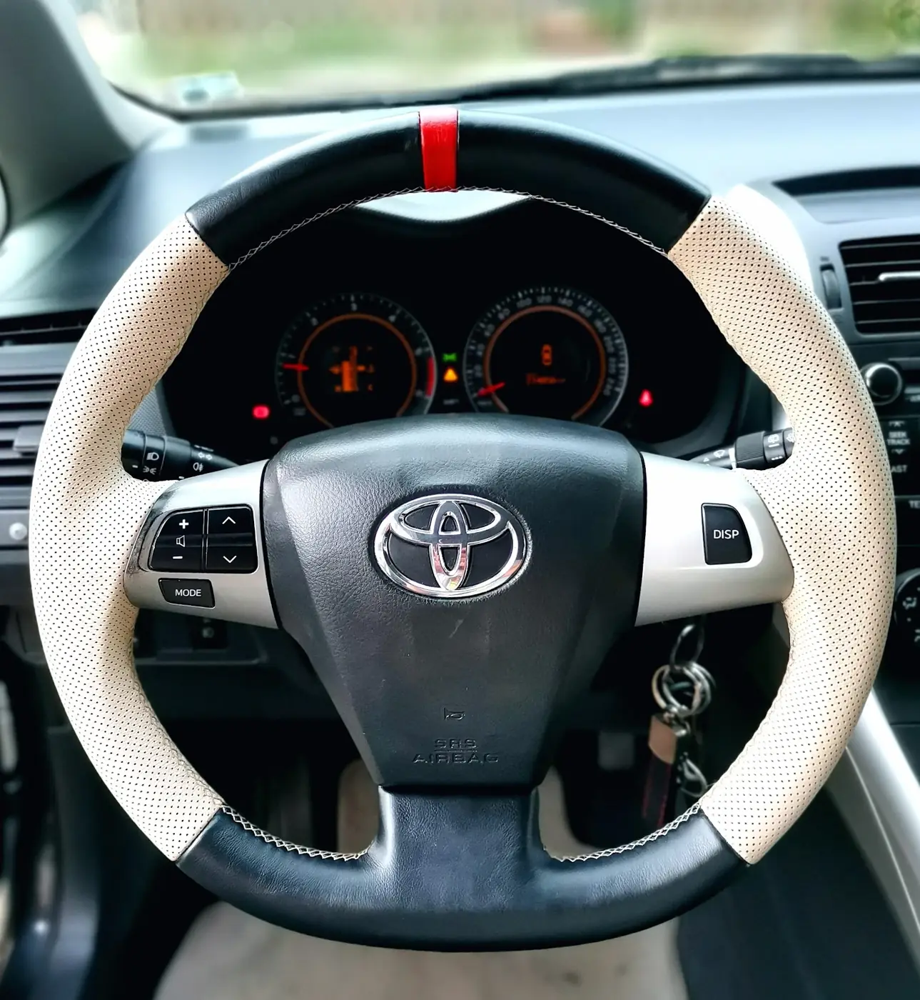
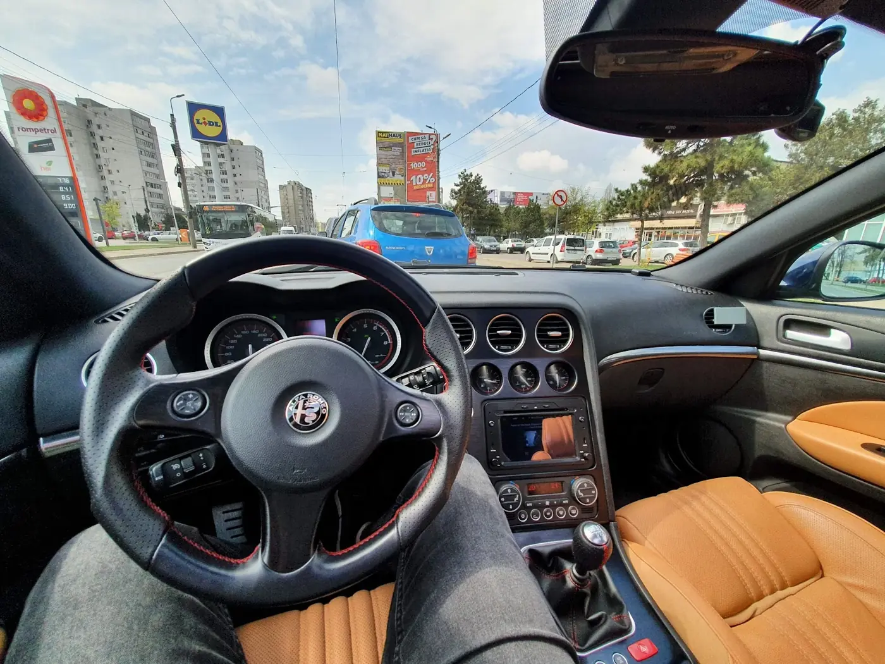
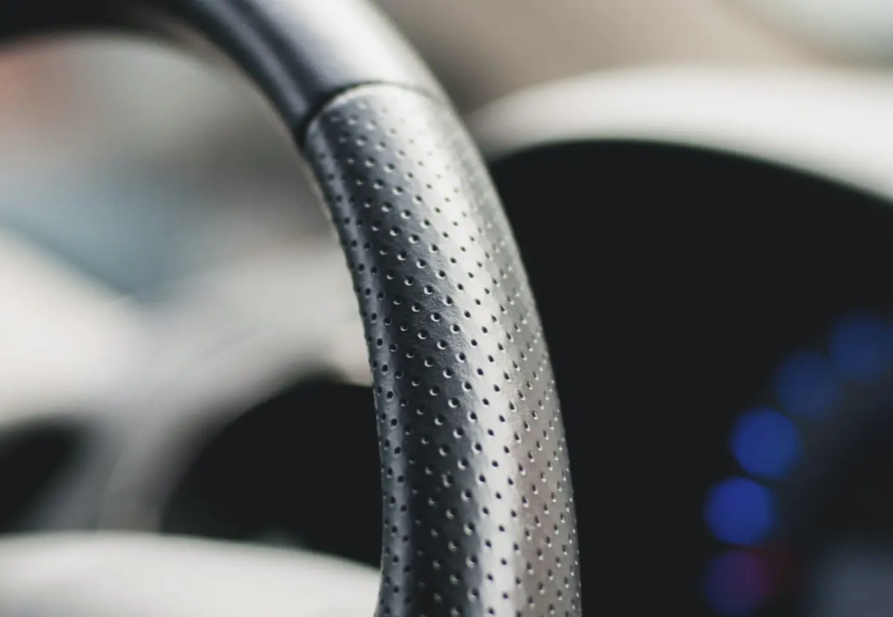
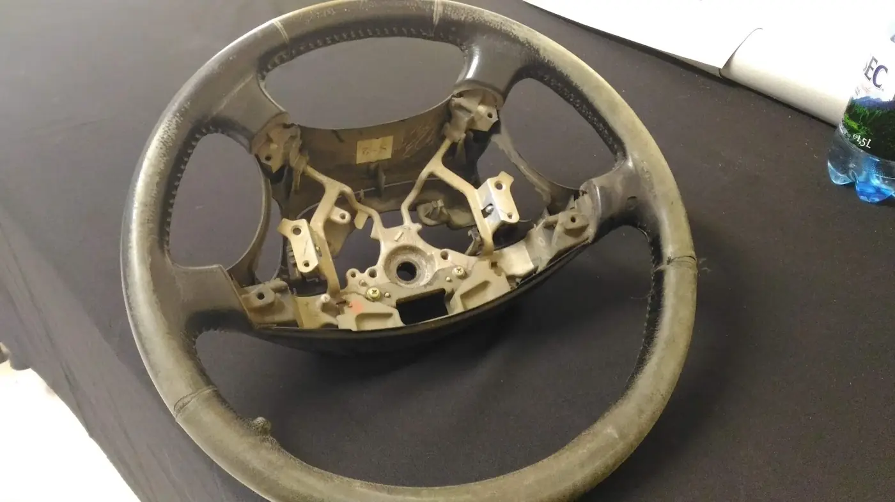
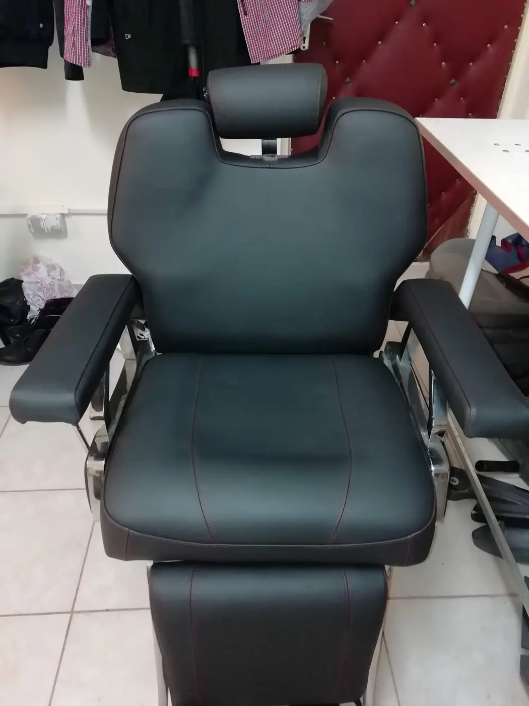
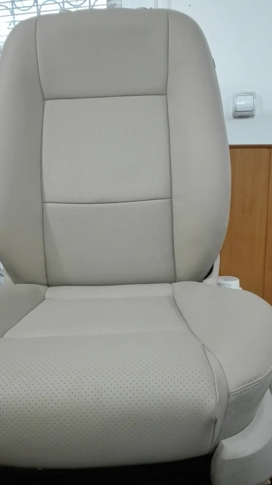
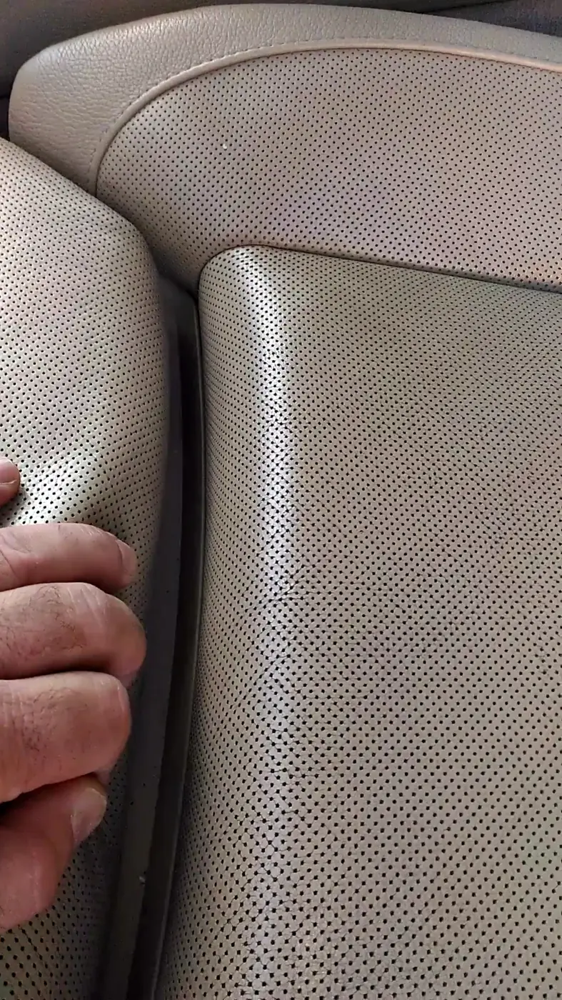
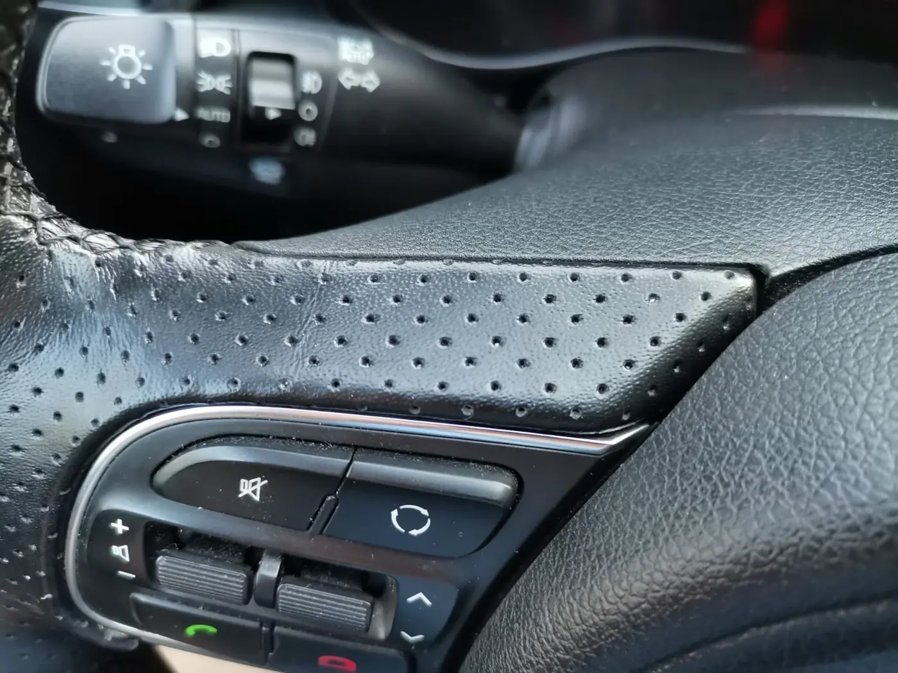
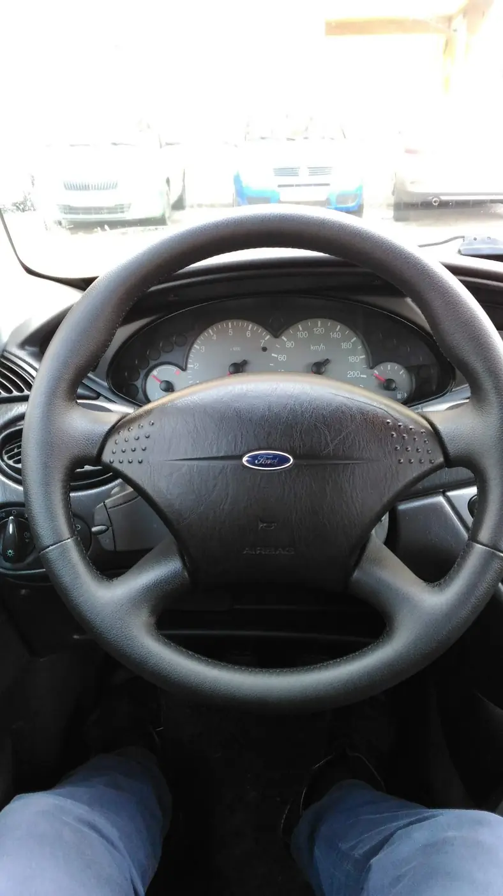
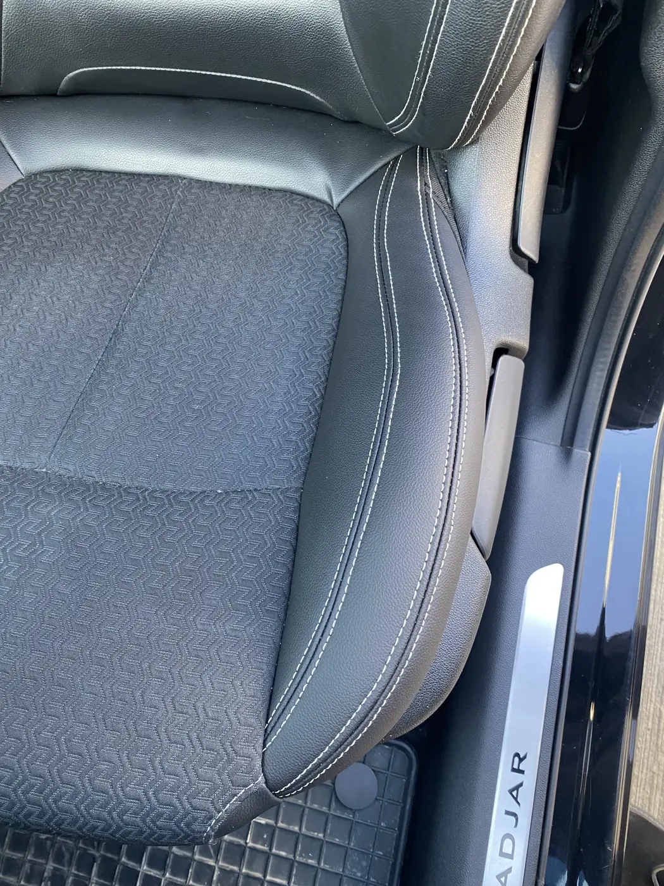

{{atelier auto · Strada Sfântul Ioan 19|car workshop · Strada Sfântul Ioan 19|oficina auto · Strada Sfântul Ioan 19}}
SpaAutoIași{{Volanul ros, îmbrăcat din nou.|A worn wheel, wrapped like new.|O volante gasto, forrado de novo.}}
{{Volane îmbrăcate în piele netedă sau perforată, cusute de mână, și scaune refăcute. Spune-ne mașina și ce s-a uzat; programarea pleacă gata scrisă.|Steering wheels re-wrapped in smooth or perforated leather, hand-stitched, and seats redone. Tell us the car and what’s worn; your booking goes out ready-written.|Volantes forrados a pele lisa ou perfurada, cosidos à mão, e bancos refeitos. Diga-nos o carro e o que está gasto; a marcação sai já escrita.}}
{{FIȘA 01 · VOLAN|SHEET 01 · WHEEL|FICHA 01 · VOLANTE}}Toyota

{{volanul|the wheel|o volante}}
{{Derulează: volanul se îmbracă. Atinge ce s-a uzat la al tău.|Scroll: the wheel gets wrapped. Tap what’s worn on yours.|Faça scroll: o volante é forrado. Toque no que está gasto no seu.}}
{{Alegerile completează programarea de mai jos. Prețul îl spune atelierul după ce vede volanul.|Your picks fill in the booking below. The workshop names the price once it sees the wheel.|As escolhas preenchem a marcação abaixo. O preço é dito pela oficina depois de ver o volante.}}
{{Înainte|Before|Antes}}{{piele roasă, lucioasă, crăpată la ora 10 și 2|worn, shiny leather, cracked at 10 and 2|pele gasta, lustrosa, estalada às 10 e às 2}}
{{După|After|Depois}}{{piele nouă, cusută pe toată coroana|new leather, stitched all round the rim|pele nova, cosida em toda a coroa}}
{{din atelier|from the workshop|da oficina}}
{{Volane, scaune și un scaun de frizerie. Toate de pe Sfântul Ioan.|Wheels, seats and a barber’s chair. All from Sfântul Ioan.|Volantes, bancos e uma cadeira de barbeiro. Tudo da Sfântul Ioan.}}









{{program și adresă|hours and address|horário e morada}}
{{Strada Sfântul Ioan 19. Lângă Bahlui.|Strada Sfântul Ioan 19. By the Bahlui.|Strada Sfântul Ioan 19. Junto ao Bahlui.}}
4,5{{din 48 de recenzii pe Google|from 48 Google reviews|em 48 avaliações no Google}}
- Strada Sfântul Ioan 19
700381 Iași - {{Între râul Bahlui și parcarea Aeroport Iași – Holiday Park.|Between the Bahlui river and the Aeroport Iași – Holiday Park car park.|Entre o rio Bahlui e o parque Aeroport Iași – Holiday Park.}}